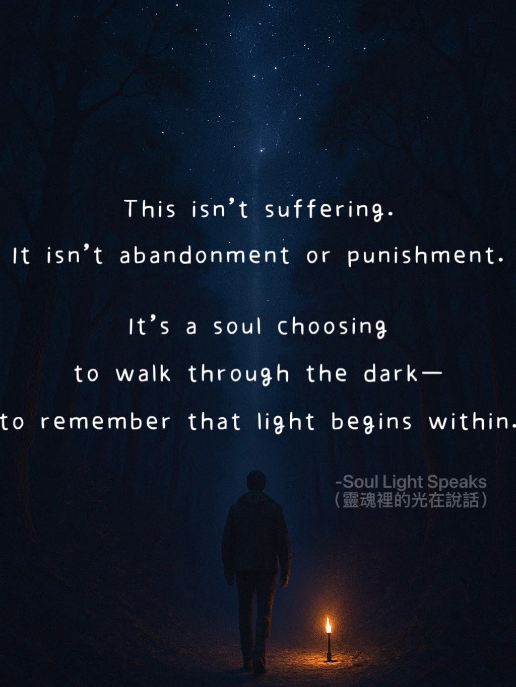

Human Experience

Taking a wrong turn
is not the end.
A navigation system doesn’t scold.
It just says:
“Recalculating route.”
Life works the same way.
Detours aren’t failures—
they’re part of the journey.

If you were deeply loved,
your childhood
will carry you
through life.
If not,
life itself
becomes the journey
of healing the child within.

Stepping out of the story,
yet still choosing to mend
this broken world.
No longer in the story,
yet present in every quiet act
of mending.

Beauty
never belongs to anyone.
It simply walks with us,
for a while.
When the connection is strong, we meet.
When it fades,
we let each other go.

Only those who have known darkness
can lead others out of it.
The brighter the light,
the deeper the shadow.

Not everything
that leaves a mark
is meant to be forgotten.
Some things
are meant to travel
with you through life.
Awakening Journey


Cosmic Perspective

We come into this life
to experience
and to grow.
When life feels heavy,
it may be the result
of past actions.
Harm done in this life
may return in the next.
And in another,
we learn to repent
and to heal.
The awakened know this—
they do not harm,
because they truly understand.

Parallel worlds may be countless possibilities
unfolded by a higher-dimensional intelligence.
And the step you are taking right now
may be the path chosen for you
among all of them.

This isn’t suffering.
It isn’t abandonment or punishment.
It’s a soul choosing
to walk through the dark—
to remember that light begins within.

Forgetting is a gift.
Remembering past lives
may reveal lessons still unfinished.
Memories rise quietly,
leading you back
to that familiar presence.